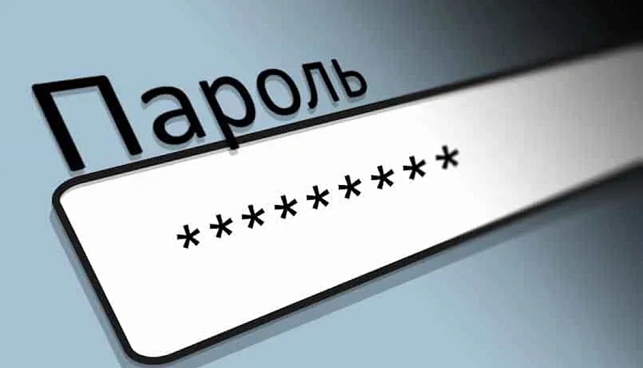

Определение надежного пароля

Основные характеристики надежного пароля:
- Рекомендуемая длина: не менее 12 символов, а лучше 16 или более. Чем длиннее пароль, тем больше времени потребуется для его взлома методом полного перебора.
- Сложность (Разнообразие): Пароль должен включать в себя символы разных типов, такие как:
- Прописные буквы (A-Z)
- Строчные буквы (a-z)
- Цифры (0-9)
- Специальные символы (!@#$%^&*)
Регулярное обновление
Пароль следует периодически менять, чтобы снизить риск компрометации в случае утечки или взлома.
Почему важно?
Замена пароля снижает риск, связанный с возможным устареванием пароля или его компрометацией.
Методы создания надежных паролей
Метод парольных фраз
Парольная фраза - это метод создания пароля, который основан на использовании длинной, легко запоминающейся фразы вместо отдельного слова или комбинации символов. Вместо того, чтобы пытаться создать сложную комбинацию случайных символов, вы используете целую фразу, которая может быть осмысленной или абсурдной, но легко запоминаемой лично вами.
Преимущества:
- Такой пароль легко запомнить и трудно взломать
Использование генераторов паролей
Генераторы паролей - это инструменты, которые автоматически создают сложные и случайные пароли.
Преимущества использования генераторов паролей:
- Случайность: Генераторы паролей создают случайные последовательности символов, которые не связаны между собой и не основаны на словах или фразах. Это обеспечивает высокий уровень случайности и непредсказуемости, делая пароль более устойчивым к атакам.
- Сложность: Генераторы могут создавать пароли с большим разнообразием символов (верхний и нижний регистр, цифры, специальные символы), что значительно повышает их сложность.